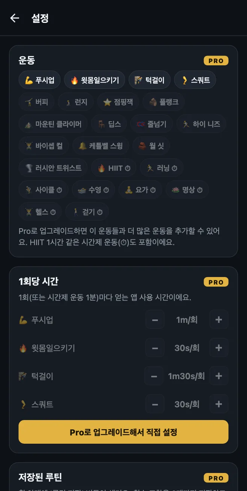
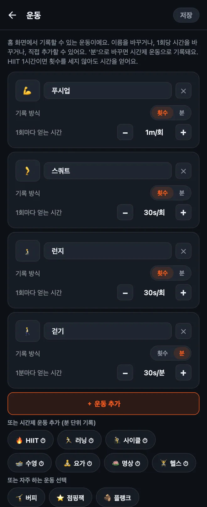

HonorFit에서 나만의 운동 설정하는 법
안녕하세요 여러분! HonorFit은 원래 제가 쓰려고 만든 팔굽혀펴기 앱 차단 앱이에요. 푸시업을 해야 인스타그램 잠금이 풀리고, 횟수는 양심 시스템으로 제가 직접 기록해요(카메라 없음). 기본으로 들어 있는 운동은 푸시업, 윗몸일으키기, 턱걸이, 스쿼트 네 가지예요.
그런데 모두가 푸시업을 하고 싶은 건 아니잖아요. 손목이 아픈 분도 있고, 버피가 더 좋은 분도 있고, 오늘 벌써 8km를 뛰었으니 그걸로 인정받고 싶은 분도 있을 거예요. 다 맞는 말이에요! 그래서 전부 바꿀 수 있게 해 뒀어요. 정확히 어떻게 하는지, 그리고 무료로 되는 것과 Pro가 필요한 것을 정리해 볼게요.
무료로 되는 것, Pro가 필요한 것
먼저 솔직하게 말씀드리면, 운동을 바꾸는 건 Pro 기능이에요. 무료 버전은 기본 운동 네 가지를 이 값으로 쓸 수 있어요.
| 운동 | 1회마다 얻는 시간 (기본값) |
|---|---|
| 💪 푸시업 | 1분 |
| 🔥 윗몸일으키기 | 30초 |
| 🧗 턱걸이 | 1분 30초 |
| 🦵 스쿼트 | 30초 |
무료 버전에서는 휠 하나로 한 세트에 20회까지 기록할 수 있고, 한 번에 20분까지 적립할 수 있어요. 차단, 기록, 통계는 앞으로도 계속 무료예요.
Pro는 월 3달러 또는 한 번 결제 19.99달러예요(미국 기준 가격이에요. 가격은 나라와 통화에 따라 다르고, 스토어에서 내 통화로 표시돼요). 운동을 추가하고, 이름을 바꾸고, 삭제할 수 있고, 1회마다 얻는 시간을 바꾸고, 시간제 운동을 분 단위로 기록할 수 있어요. 휠은 한 세트에 100회까지 늘어나고, 20분 상한도 사라져요. Pro에는 다른 기능도 있지만, 이 글에서는 운동 이야기만 할게요.

1. 운동 편집 화면 열기
- 홈 화면 오른쪽 위의 톱니바퀴를 눌러 설정을 열어요.
- 맨 위에 있는 운동 카드를 눌러요.
운동마다 카드가 하나씩 보여요. 여기서 바꾼 건 오른쪽 위의 저장을 누르기 전까지는 적용되지 않으니까, 마음껏 이것저것 눌러 보세요. 저장하지 않고 나가면 아무것도 바뀌지 않아요.

2. 운동 이름이나 이모지 바꾸기
이름을 누르고 원하는 대로 입력하면 돼요. 실제로 하는 운동이 그거라면 ‘푸시업’을 ‘무릎 푸시업’이나 ‘벽 푸시업’으로 바꿔도 돼요. 아이콘을 바꾸려면 왼쪽의 이모지 칸을 누르고 목록에서 고르세요(운동 관련 이모지가 40개쯤 있어요).
소소한 팁 하나: 기본 운동 이름은 앱 언어를 따라가요. 그래서 폰이 영어로 되어 있으면 ‘스쿼트’가 영어로 보여요. 이름을 한 번 바꾸면 입력한 그대로 보여요.
3. 1회마다 얻는 스크린타임 정하기
운동마다 아래쪽에 1회마다 얻는 시간이 있고, −와 + 버튼이 있어요. 한 번 누를 때마다 5초씩 바뀌고, 가장 낮게는 5초까지 내려가요. 버피는 1분 30초, 점핑잭은 10초처럼, 나한테 공평하다 싶은 대로 정하면 돼요.
편집 화면을 열지 않고 값만 바꿀 수도 있어요. 설정에서 운동 카드 바로 아래에 1회당 시간 섹션이 있고, 같은 −/+ 버튼이 있어요.
4. 운동 추가하기
방법은 두 가지예요.
- ‘＋ 운동 추가’를 누르기. ‘새 운동’이라는 카드가 1회당 30초로 생겨요. 이름을 바꾸고 값을 정하세요.
- 추천 운동을 누르기. 버튼 아래에 자주 하는 운동들이 있어서 한 번만 누르면 추가돼요: 버피, 런지, 점핑잭, 플랭크, 마운틴 클라이머, 딥스, 줄넘기, 하이 니즈, 바이셉 컬, 케틀벨 스윙, 월 싯, 러시안 트위스트. 이것도 처음엔 1회당 30초예요. 추가한 운동은 추천 목록에서 사라져요.
운동마다 홈 화면에 휠이 하나씩 생기니까, 네 개 정도로 유지하는 걸 추천해요. 그보다 많으면 원하는 휠을 찾느라 스크롤하게 돼요.
5. 시간제 운동 기록하기 (횟수 대신 분 단위로)
제일 많이 받는 질문이 이거예요. 걷기, 요가 수업, 러닝, 헬스장에서 보낸 한 시간처럼, 횟수로 셀 수 없는 운동도 있잖아요. 카드마다 기록 방식: 횟수 | 분 스위치가 있어요. 분으로 바꾸면 그 휠은 분을 세고, 값도 1분마다 얻는 시간으로 바뀌어요.
한 번에 추가할 수 있는 시간제 추천도 있어요(⏱ 표시가 있어요): HIIT, 러닝, 사이클, 수영, 요가, 명상, 헬스, 걷기.
새 시간제 운동은 1분당 30초로 시작해요. 그래서 HIIT를 한 시간 하면 앱 시간 30분을 얻어요. 참고로, 운동을 횟수와 분 사이에서 바꾸면 값이 30초로 초기화돼요. ‘1회에 1분’과 ‘1분에 1분’은 꽤 다른 조건이니까요. 바꾼 다음에 다시 설정해 주세요.
휠은 1분 단위로 세기 때문에, 30초짜리 플랭크는 분으로 기록하기엔 잘 안 맞아요. 이런 버티기 운동은 횟수로 두고, 1회가 뭔지 직접 정하는 걸 추천해요(예를 들어 ‘20초 버티기 1번’).
6. 삭제하거나 처음부터 다시 하기
- 카드의 ✕를 누르면 그 운동이 삭제돼요. 최소 한 개는 남겨 둬야 해요.
- 맨 아래의 기본값으로 재설정을 누르면 원래 운동 네 가지와 원래 값으로 돌아가요. 다른 것들과 마찬가지로, 저장을 눌러야 적용돼요.
값은 이렇게 정해요
이 값은 말하자면 내 앱의 ‘가격’이에요. 목표는 거짓말하지 않고 실제로 낼 수 있는 가격이에요. 참고할 만한 출발점 몇 가지:
- 힘든 동작일수록 더 많이. 턱걸이와 버피는 1분 30초, 푸시업은 1분, 스쿼트와 런지는 30초.
- 시간제 운동은 절반 정도로. 1분당 30초면, 20분 걸으면 10분 스크롤할 수 있어요. 가장 만들고 싶은 습관이 걷기라면 1분당 1분으로 올려도 좋아요.
- 숫자를 부풀리고 있는 나를 발견하면, 가격을 낮추세요(1회당 시간을 올리세요). 양심 시스템에서 제가 지키는 규칙이에요. 하지 않은 횟수를 기록하게 된다면, 그건 가격이 잘못된 거지 내가 못나서가 아니에요.
- 하드 모드(Pro)를 쓰면 홈 상단의 버튼 하나로 모든 값이 절반이 돼요. 하나하나 고치지 않고 좀 더 빡센 하루를 보내고 싶을 때 좋아요.
구체적인 조합 아이디어가 필요하다면 글을 두 개 더 써 뒀어요: 케겔 운동과 힙 브릿지로 폰 잠금 풀기, 그리고 푸시업이 안 맞을 때 할 수 있는 저강도 운동.
HonorFit Blocker는 iPhone과 Android용 무료 앱 차단 앱이에요. 양심 시스템, 카메라 없음, 모든 데이터는 내 폰 안에만 있어요. 나만의 운동은 Pro에 포함돼요. 모두에게 맞는 앱은 아니지만, 마음에 들어 하실 분도 있을 거예요!